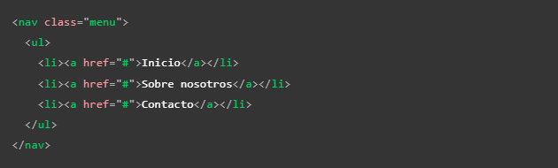
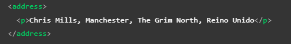
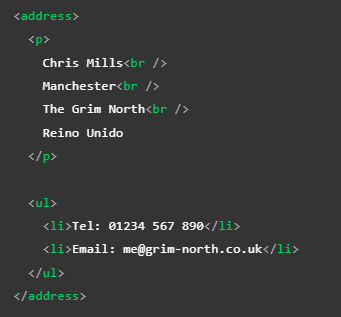

Etiquetas de estructura
Estas etiquetas cumplen con la función de devidir la paguina web en diversas secciones, segun la función o el contenido de cada una de estas. A su vez actuan como etiquetas contenedoras para otros elementos HTML por lo tanto son una pieza clave en la estructura de una paguina web.
Las etiquetas contenedoras se agrupan en dos grupos los cuales son:
Etiquetas con Valor Semantico
Header
-
Esta etiquetacumple la función de actuar como un contenedor de la cabecera de la pagina, comunmente se define como una franja horizontal ubicada en la parte superior de la pagina, suel uncluir el titulo o nombre la paguina, así como in logoy puede que un eslogan.
Tambienpuede incorporarse como encabezado de seciones como "section" o "article", en cuyo caso unacmante será el ancabezado particular de cada sección.
Nav
-
El rol de esta etiquetaes contener los elementos de navegación principal de la paguina por lo que suele contener enlaces, pestañas y botones, es decir contiene el menú se navegación principal, es común que se llegue a incorporar al encabezado, sin envargo tambien puede ser positivo el manejarlo como un elemto a parte, ya que hace más facil la interacción con los motores de lactura.
Nota: Una buena practica es agrupar los elemtos del "nav" en una lista desrodenada de la siguiente forma:
 Main
-
En este elemto se ubica el cuerpo prinipal de la paguina, suele ubicarse directamente dentro de "body", se utiliza una vez por pagina, este se divide en otros conetenedores que conforman el contenido de la paguina, estos contenedores son:
- Section: Esta etiqueta se usa para dividir la paguina en secciones, una buena practica es empezar cada encabezado con un titulo de encabezado, incluso se podria usar para dividir un "article" en secciones
- Article: Esta etiqueta encuadra un bloque de contenido que tiene sentido por sí mismo aparte del resto de la página, cumple con el objetivo de llegar a ser reutilizable, por ejemplo: una entrada de un block, tambien puede anidarse y vincularse con autores, basicamnete almacena elemtos de contenido independientes
- Div: El div se usa para crear seciones o para agrupar contenido de cualquier tipo
- Aside: Por ultimo pero no menos importante el elemento "aside" hace referencia a la barra lateral de la paguina, suele incorporarse dentro de "main" pese a que hace referencia a otra area de la paguina
Aside
-
Este elemto hace referencia a la barra lateral de la paguina, suele incorporarse a la izquierda o derecha e incluso en ambos costados dependiendo del diseño del sitio, suele contener algun tipo de información complemetaria al contenido principal, por ejemplo enlaces, citas, resumenes, bibliografias, algun menú de navegación secundario o simplemete publicidad.
Footer
-
Esta es la ultma sección de la paguina, en ella se ingrasa la llamada "letra pequeña"e información de contacto, tambien pudiese contener algun otro tipo de elcaces de navegación, esta sección al gual que el encabezado suele ser común para toda la paguina.
Address
-
Como tal la etiqueta "address" no se trata de una etiqueta contenedora en sí, sin embargo es justo nombrarla en este apartado debido a su gran relación con otras etiquetas contenedoras, especialmente con la etiqueta "article", ya que su función es aportar la información de contacto de un "article" cercano o de un elemento padre como "body", su forma de empleo similar a una etiqueta contenedora envolviendo su cotenido, sin embargo se trata de una etiqueta semantica creada unicamente con el proposito de brindar la información de contacto.
 
Etiquetas No Semanticas
Div
-
Se trata de una etiqueta de bloque no semantica, en otras palabras se trata de un contenedor que por si mismo no posee ningun valor semantico por lo tanto se usa cundo no se alla un elemto que calce con las necesidades del codigo o cuando no se desea que algun elemto no tenga alguna valor semantico en particular. Cuenta con atrubutos genericos como:
- Title
- Id
- Style
- Lang: Información del lenguaje
- Aling: Aloneación del texto
Tambien cuenta con atributos especificos como:
- datasrc: Enlaza a una fuente de datos externa
- datafld: El nombre de una propiedad o columna de datasrc
- dataformatas: indica como deben ser tratados los datos obtenidos de datasrc
- align: alineación del texto
En otras palabras se puede usar como un contnedor simple para estructurar la pagina atavez de clases o id.
Nota: la desventaja del "div" radica en que es tan facil usarlos que puede mal acostumbrar al programmador, usarlos en exseso conlleva que el mantenimiento y actualización del contenido seran mis complejos de realizar, a la vez que pueden ocacionar un codigo poco legible.
Span
-
Esta es una etiqueta no semantica de texto, por lo tanto su función es incorporarlo en el interior de un texto para hacer posible distinguir algun area del texto sin añadirle algun valor semantico. Esto se puede lograr usando el atributo "class" para poder incorporar css.
Nota: por si mismo el navegador no muestra algun estilo en particular al texto que se encuentre en este elemto.